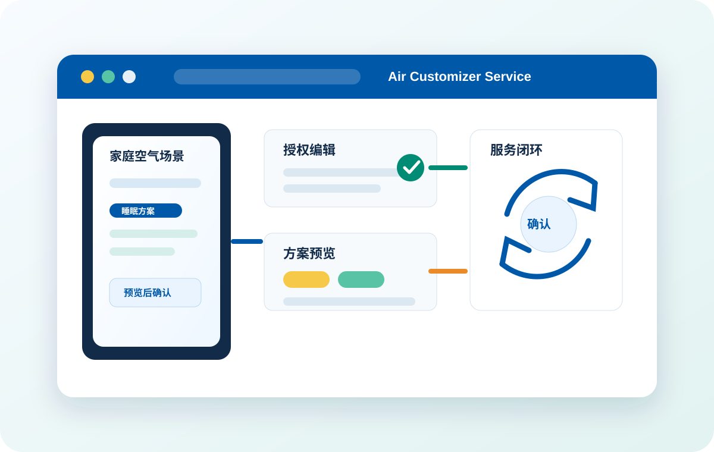

不是普通远程协助通常のリモート支援ではありません
不只告诉用户怎么操作，而是围绕家庭空间、设备配置和使用习惯，直接形成可落地的空气场景方案。操作方法を伝えるだけでなく、住空間、機器構成、利用習慣に基づき、実行可能な空気シーンプランを直接作成します。
通过远程查询、用户授权、远程编辑、方案预览和确认启用机制，让用户安心获得个性化空气体验，同时帮助公司提升服务效率、沉淀空气方案资产，并建立区别于他社的专业服务闭环。リモート照会、ユーザー承認、リモート編集、プランプレビュー、確認後の有効化により、ユーザーが安心して個別最適化された空気体験を得られるようにし、同時に会社のサービス効率向上、空気プラン資産の蓄積、他社と異なる専門サービス循環の構築を支援します。

01 项目定位01 プロジェクトの位置付け
本功能不是简单客服协助，也不是单纯设备参数设置，而是把大金在空调、空气、湿度、气流、定时和联动方面的专业能力，转化为用户可理解、可选择、可确认的家庭空气场景方案。本機能は単なるカスタマーサポートや機器パラメータ設定ではなく、ダイキンの空調・空気・湿度・気流・タイマー・連動に関する専門力を、ユーザーが理解し、選択し、確認できる家庭向け空気シーンプランへ変換するものです。
不只告诉用户怎么操作，而是围绕家庭空间、设备配置和使用习惯，直接形成可落地的空气场景方案。操作方法を伝えるだけでなく、住空間、機器構成、利用習慣に基づき、実行可能な空気シーンプランを直接作成します。
由大金专业服务人员提供判断和服务背书，方案透明展示，并由用户最终决定是否启用。ダイキンの専門スタッフが判断とサービスの裏付けを提供し、プランを透明に提示したうえで、最終的な有効化はユーザーが決定します。
通过授权、定制、预览、确认和沉淀，建立专业服务与家庭设备控制权之间的清晰边界。承認、カスタマイズ、プレビュー、確認、蓄積を通じて、専門サービスと家庭機器の制御権との明確な境界を構築します。
02 服务闭环02 サービス循環
用户只表达真实生活需求，复杂参数和联动逻辑由专业人员完成，再交由用户预览和确认。ユーザーは生活上のニーズを伝えるだけで、複雑なパラメータや連動ロジックは専門スタッフが作成し、その後ユーザーがプレビューして確認します。
睡眠、起床、回家、离家、梅雨季、老人儿童房、节能运行等生活场景。睡眠、起床、帰宅、外出、梅雨時期、高齢者・子ども部屋、省エネ運転などの生活シーン。
在用户允许下查看设备状态、已有场景、定时规则和联动设置。ユーザーの許可を得て、機器状態、既存シーン、タイマー規則、連動設定を確認します。
配置温度、湿度、风量、模式、时间段和设备联动规则。温度、湿度、風量、モード、時間帯、機器連動ルールを設定します。
展示适用空间、运行时间、控制设备、关键参数和预期效果。適用空間、運転時間、制御機器、主要パラメータ、期待効果を表示します。
方案不会强制生效，必须由用户自主确认后才应用到家庭设备。プランは強制的に反映されず、ユーザー自身の確認後に家庭機器へ適用されます。
优秀方案可沉淀为模板，用于类似家庭、户型和需求的快速服务。優れたプランはテンプレートとして蓄積し、類似する家庭、間取り、ニーズへの迅速なサービスに活用できます。
03 三方价值03 三者への価値
用户不用研究复杂规则，只要提出生活需求，空气定制师就能转化为可预览、可确认的场景方案。ユーザーは複雑なルールを学ぶ必要がなく、生活ニーズを伝えるだけで、空気カスタマイザーがプレビュー・確認可能なシーンプランへ変換します。
客服从问题处理者升级为空气体验顾问，更多体验问题可在 App 内完成诊断、优化和闭环。カスタマーサポートは問題処理担当から空気体験アドバイザーへ進化し、より多くの体験課題をアプリ内で診断、最適化、完結できます。
相比普通客服指导或 AI 推荐，该模式具备专业背书、权限边界、预览确认和方案沉淀能力。通常のサポート案内や AI 推薦と比べて、このモデルは専門的な裏付け、権限境界、プレビュー確認、プラン蓄積の能力を備えています。
04 服务资产04 サービス資産
空气定制师制作的优秀方案可按季节、人群、户型和使用场景复用，逐步形成大金专属空气场景知识资产。空気カスタマイザーが作成した優れたプランは、季節、対象者、間取り、利用シーンごとに再利用でき、ダイキン独自の空気シーン知識資産を形成します。
05 差异化竞争05 差別化競争
06 产品分层06 製品の役割分担
基础诊断与普通售后基礎診断と通常アフターサービス
高阶定制服务承载平台高度カスタマイズサービスの提供基盤
07 汇报总结07 報告まとめ
“空气定制师 · 远程编辑查询场景”把大金的专业空气能力从设备端延伸到服务端和 App 端，使大金不只是提供智能控制工具，而是提供可被用户感知和信任的家庭空气解决方案。「空気カスタマイザー · リモート編集・照会シーン」は、ダイキンの専門的な空気能力を機器側からサービス側とアプリ側へ拡張し、ダイキンを単なるスマート制御ツールの提供者ではなく、ユーザーが実感し信頼できる家庭向け空気ソリューションの提供者にします。